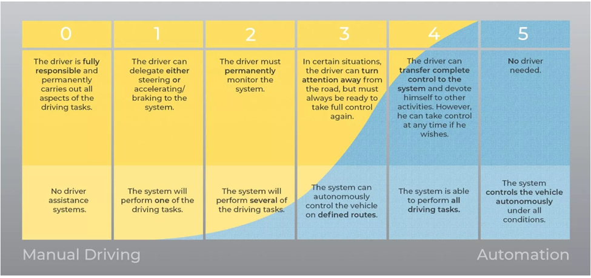
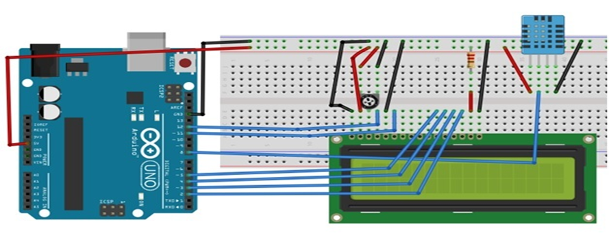

IT Technologies
Autonomous Vehicles
What does it do?
Autonomous vehicles, also known as self-driving cars or driverless cars, have been recently put in the limelight over the last few years. Some of the 52 different companies that have been approved by the California Department of Motor Vehicles to test autonomous vehicles on the road include Apple, Waymo, Tesla, F2ord, Honda, BMW, Nissan, Intel, and Uber (Some of the companies that are working on driverless car technology - ABC News). With this leap in driving technology, companies will need to blend various technologies and infrastructure to operate properly, as well as working closely with governments and local governments to make sure the roll out is done in a safe manner and all risk is reduced to the lowest it can be. The current state of this technology is measured in a level system that has been devised by SAE (Society of Automotive Engineers) International which has developed five levels for the advancement of autonomous vehicles. That can be seen below.

Using the chart above we currently find that we are sitting in Level 2 by allowing self-driving cars to utilize some of the functions that you will soon find out in further paragraphs. The current hardware used in self-driving cars is radar, radio antennas, and ultra-sonic sensors that currently assist with driving on roads to assist in enhanced safety equipment like enhanced cruise control. The implementation of the above hardware is in use with current new cars that are rolling out of the factory .
With this hardware, it has allowed the use of different applications of software, this has allowed self-driving cars to use a program called Vehicle to Vehicle (V2V) which allows the car to keep in contact with other self-driving cars this is shared by passing different bits of information like current route, current position, current speed, and possible hazards that could impede on the current journey and create smooth flowing traffic conditions.
To help with these smooth traffic conditions self-driving cars will need to be able to connect with infrastructure so that they can update on different information where will be able to extrapolate the information and use this whilst following the current route, this will be done by Vehicle to Infrastructure (V2P) that will be sent via the 5G network and the information that will be shared to all cars in the current location will be speed limits and hazards that are in place like road works, accidents, this information will also show available parking slots and the ability to book specific parking spots. This will also contribute to the smooth flow of traffic conditions. One more important software addition is Vehicle to Pedestrian (V2P) this will allow the self-driving car to know the position of pedestrians reducing the risk of a catastrophic road traffic accident.
So, what are the current benefits of these self-driving cars now, they currently help in reducing fuel and energy costs for the owner of the vehicles this new technology will only drive enhancements for new cars and hopefully a breakthrough in new software and hardware, the other benefit that could be a result self-driving cars is an increase of productivity for early adopter countries.
What is the likely impact?
The rapid development of autonomous vehicles will significantly impact everyone's daily lives. Both the pros and cons must be carefully and thoroughly reviewed. The first and possibly most important point to consider is the effect petrol cars are having on our environmental footprint. As time goes on, our environmental footprint grows larger and larger, and a great way to lessen our impact on the environment is to advance in the development of battery-powered autonomous vehicles. Amongst the benefits, we can mention having less traffic and safer roads. In the (near) future, when all cars on the road are automated, vehicles will be able to communicate with each other and act all as a single hivemind without the judgment of a physical driver. This allows for faster and more accurate travel timing. Automated vehicles will prevent more accidents and traffic jams. They also eliminate the need for traffic lights and road signs, significantly reducing government expenses and less need for constant roadwork and maintenance.
But it is also essential to also look at possible negative aspects of automated cars.
Protecting our vehicles from cyber hacking is something that must be addressed. Things as small as unauthorised lines and arrows on the street can confuse vehicles leading to miscalculations. As mentioned earlier, the loss of job is also something to worry about. Since the 17th century, taxi services have been active, with a physical driver earning a wage for his services. If automated vehicles were to take over, then 3.9 million Uber drivers globally would lose their jobs, not to mention other taxi companies such as: Silver Service Taxi, OLA, Go Catch, and many more. The loss of job or such a large amount of people may cause a severe economic crisis.
How will this affect you?
In daily life, autonomous vehicles will impact our ability to transport easily without the need for public transport. Having autonomous vehicles will solve many problems when it comes to transportation. Such as the ability for people who do not have a license, both young and old, to travel alone so as not to inconvenience another driver who may have duties of their own. Autonomous vehicles and taxi servers are also something to consider. Due to the recent COVID-19 pandemic, many people may not feel safe being in a car with another person, as well as cheaper rides considering no driver is inconvenienced. However, there are also many cons to having autonomous vehicle services, such as a significant loss of jobs. I have many friends and family in the Uber/Taxi work field, and a sudden loss of a job may affect many millions of lives. Travellers may also feel safer on the road, knowing that the streets are controlled by a delicate hivemind of constantly communicating vehicles with thousands of calculations and algorithms running all at once. Autonomous vehicles also allow for accurate travel enabling us to know the exact times it will take to get from point A to point B. These vehicles are not limited to just cars but could also include vehicles like forklifts. Workers such as my grandfather, who are required to operate work vehicles, find long days tedious and strenuous. Automating such vehicles will relieve many physical jobs and those workers can be relocated to a department that informs the vehicles of their tasks that day. People with medical issues that inhibit them from driving would then allow them to stay on the road as well as people who are busy with work to not have to pay attention to the road.
Artificial Intelligence/Machine Learning
What does it do?
At its core, Artificial Intelligence, or AI, is a field of machines that display qualities commonly associated with human intelligence like learning, problem solving, decision making, prediction and complex computation This is usually achieved through Machine Learning (ML), which is a process of training computers to perform a certain task with higher and higher success over time, without being explicitly programmed to do so by a human.
There are 3 different algorithms to machine learning: Supervised Learning, Unsupervised Learning, and Reinforcement Learning.
Supervised learning is when the computer is given labelled data and asked to classify it or to predict an outcome. The computer will recognize patterns in the data and use that information to complete the task when presented with data that it hasn't seen before. An example of this is a computer being given the task to tell apples from bananas. The computer would find patterns in the traits of apples and bananas, like the shape (apples are round while bananas are crescent shaped) or colour (apples are red while bananas are yellow) and when shown a new picture of an apple or a banana, be able to group them accordingly. However, this approach is susceptible to 'overfitting', where the computer has become too used to certain types of data and cannot easily adapt to data that falls outside of what it recognizes.
Unsupervised learning instead gives the computer unlabelled data and allows it to find patterns in it of its own accord. This is especially useful when trying to group unsorted data and may even help in finding pattern not previously thought of. For example, if a computer is given data about fruits without the name being included, it might be able to figure out by itself that certain kinds of fruits are within a certain range of weight or number of seeds. This approach does take much longer than supervised learning, as the computer has no way to correct itself.
Reinforcement learning is quite different from Supervised and Unsupervised learning as it has less to do with data and more to do with the task. A computer is given a start point and a goal and tries to complete this goal through trial and error. When the computer completes the task successfully, it is rewarded, much like how someone might train a dog to do a trick. This kind of approach is commonly used in robotics or when training machines to play games (Arora 2020).
Today, AI is widely used and applied in almost every facet of our lives.
AI facial and speech recognition has made it easier to identify people and is helping to make security and law enforcement more efficient and automated. By storing photos many people's faces in a database, a computer can identity someone by comparing their face to the millions on their database to find a match.
Online social media platforms like Twitter, YouTube and Netflix use AI algorithms to recommend media to their users. These take user preference data from their previous actions on the platform (likes/search results/watches) and use them to suggest other content that is similar.
Predictive modelling AI is being used by meteorologists to track cloud patterns and storm formations. This combined with satellite data can be clustered by a machine and used to construct a model that can predict the weather in the future based on the current conditions.
AI have been trained to play both board and video games to a higher level of skill than humans. An example of this was when AlphaGo beat the world's best Go player, Ke Jie (Byford 2017). An AI plays thousands of attempts of the game, chooses the best ones and uses them as reference for future attempts until it has learned to play the game optimally.
The idea of a robot that can act like a human have been thought about and speculated upon in myths, stories and philosophy for centuries, most notably in Mary Shelley's Frankenstein and Karel Čapek's R.U.R. In 1950 Alan Turing proposed the Turing Test, which posits that if a machine can fool a human into believing it's human, then that machine would be considered intelligent. Since then, technology has come closer and close to passing this test.
Currently our AI are only able to perform specific tasks. This is what is known as Weak or Narrow AI. In the distant future we might be able to make AI that can display human intelligence in all kinds of areas, even ones that they weren't programmed for, or what is known as Strong AI.
What is the likely impact?
A lot of changes in our society could come out of the future development of AI technology. Jobs that rely on manual labour will slowly be phased out and taken over by AI. While self-driving cars are still being tested and are not currently commercially available, once they are on the market and proven to be safe, they could make another part of our lives more convenient. In a similar way to automated dishwashers and other appliances, people would have more time to do other things while the computer does the repetitive task of driving for them. Online technical support is already being replaced by chatbots, with a human operator being further up the chain of communication for any serious queries. The healthcare industry will benefit greatly from AI that can sort through massive amounts of patient data to make decisions on which patients are higher priority, and diagnose patient based on previous data on symptoms and conditions. The banking industry could also make use of this where it could speed up the process of transactions and use previous user spending habit data to catch suspicious activity.
The future of AI also brings with it some unanswered questions and concerns. In order for machines to learn, they need a lot of training data, which in some cases, is people's personal information. The fact that people's names, faces and other such intel is being collected and used without their knowledge or consent raises some ethical concerns about privacy. There have also been a few incidents of facial recognition AI misidentifying people as suspects or crashes related to self-driving cars, leading many people to question how safe this technology really is. It also follows that AI replacing manual labour will cause a shift in the job market and displace many people from earning an income. While a scary thought, this sort of societal and economic upheaval has happened before during the Industrial Revolution of the 1800s. As history is doomed to repeat itself, it is likely that our world will eventually readjust to the new advancements in technology and find ways to use it to its fullest potential.
How will this affect you?
Recent technologies like MidJourney, AIVA and NovelAI have allowed people to generate art, music or writing using AI. This is done by scraping a lot of photos/music/text with a deep learning algorithm and finds patterns in them to create a latent space from which they can reference to generate new media.
With tools like DALL-E, Stable Diffusion or NVIDIA Canvas, artists could easily produce references, inspiration or bases to refine and painting, massively speeding up the creation process. If you are an artist working for someone this means you can share ideas and deliver concepts much faster than if you had to draw everything by hand. The 3d animation industry is already using AI to interpolate their animations and makes it so that studios don't have to hire as many in-between animators. If AI-Generated art gets good enough companies might not even need to hire human visual artists.
Many artists are uncertain about the future of their careers due to this new development. After all, why bother paying an artist for their work when you can get similar results for a fraction of the time and cost? These algorithms can replicate the style of almost any artist since they have built up a database of many artist's works. Some are considering it a form of art theft, as most of the artwork fed to these AI art generators has been used without the artist's knowledge or consent and make their users pay to use them, meaning the creators of these applications are indirectly profiting of other artist's works.
Recently, an AI generated art piece made in MidJourney by a programmer named Jason Allen won first place in the Colorado State Fair fine arts competition, outraging many in the art community and raising the question of whether AI art is 'real art' (Liang 2022). While laws and copyright have not caught up to this development yet, art in the future might be split into AI-made and man-made, with one being easy to produce with no copyright, and the other being considered more special or rare, similar to how hand-made goods are still in demand for their novelty even when industry-made products have become the norm. Ultimately, AI art generators are a tool, and can be used for both good and bad purposes. The possibilities for this technology are endless, but so are the dangers.
Raspberry Pi, Arduino and other Small Computers
What is a Raspberry Pi and what can it do?
Raspberry Pi is a single board computer. Pi’s are developed by the Raspberry Pi foundation based in the UK. The motivation for developing the boards (well more accurately the whole Pi system as Pi’s have their own Linux based OS) continues to be highly altruistic. The system was created primarily to enable students (focusing on middle years) to further their study in IT related fields on a low cost platform. The $70 board is relatively accessible when compared to a PC. Both the low cost and low power requirements also enabled use of the system in less developed countries, especially by IT/Computer Science students in Africa.
Hardware
The ARM CPUs were developed from the ground up in association with the Broadcom chip manufacturing company. The complete boards are manufactured under license. There are a number of physical configurations of the boards. Although all the boards are capable of running essentially the same Operating System, the specifications of the boards vary greatly in computing capacity, eg Pico and series 4.
One of the primary advantages (and uses) is the Pi’s ability to connect to customised devices using its General-Purpose Input/Output (GPIO) pins. These pins offer analogue and digital input and outputs to, for example, read sensors and drive relay switches.
Operating System and Apps
The recommended Operating System that is configured and guaranteed to work on Pi is called Raspberry Pi OS (no surprise there). Pi OS is based on a Debian based version of Linux (as are most Linux distributions). Other OS options include a version of Ubuntu and a Windows like OS.
There are a multitude of apps available for use on the Pi, downloaded through the extensive software repository. The apps range from simple games to high end database software e.g., PostgreSQL. A popular suite of tools is LibreOffice which is an open source (as are most apps on the Pi) equivalent to MS Office 365.
Can I use my Pi series 4 as a “Home Computer”?
Performance is compromised. Although I would argue Pi is usable for light web browsing and emails, basic applications such as the LibreOffice writer (Word Processor) is slow to load and a bit laggy to use. After using a 5-year-old AMD 3400G based PC as example, it would be quite difficult to feel productive using a Pi. However, given that Pi really is designed to be used by students in developing countries as a base demographic, and therefore much of that cohort having limited options at best, sure the system is usable as a basic home computer with mouse, keyboard and monitor connected.
What is an Arduino and what can it do
An Arduino is a micro-controller housed on a single board. The hardware and software are licensed under the Open-Source agreement. The basic board utilises an Atmel microcontroller and a series of digital and analogue input and output pins. 3rd party providers have developed shields that allow extra functionality such as Wi-Fi and full USB access. Overtime, these “extras” have been integrated into some boards e.g., WeMo's Wi-Fi
The Arduino Integrated Development Environment is available for all major platforms i.e., Windows, Mac, Linux, and Android. Programs are developed in C/C++, then downloaded to the Arduino usually via a USB to serial interface. There is a Python interpreter in its formative stages of development, however this cannot be used within the Arduino IDE at this stage.
Since Arduino is an Open-Source project, code libraries can be developed by anyone. The libraries are often developed to make interfacing with 3rd party add on hardware easier for example a 2-line LCD
display.

The main difference between Pi and Arduino is Pi can run the full suite of the Linux OS (can be configured as a command line system or the full GUI.) The Arduino is more of a programmable single operation microcontroller which is not usually accessed by direct human interaction e.g., no keyboard or monitor. The program once downloaded to an Arduino, executes in a loop mode and - for example reading sensors and switching devices. In broad terms, a Pi offers an extensive user experience while the Arduino does not.
Impacts of Small Computing Devices
These devices fall into two broad categories
- designed for a full computing experience (like Pi, usually an ARM or x86 chip)
- microcontroller or discrete task-based machines (like Arduino)
While Pi and Arduino are developed more for the home market as experimental devices, there is almost no limit on how small and powerful more formal industrial tier devices can become.
The computer that I am drafting the response to this assignment is a $200 stick computer. This computer plugs directly into the HDMI port on the monitor. Wiring is minimal with a Bluetooth mouse and keyboard. Somewhat similar to the demise of large mainframes of the past, smaller computers having less environmental footprint in both in manufacture/disposal and on-going energy requirements, have the humble PC nearing its use-by date.
Technologies such as Machine Learning leading to Artificial Intelligence also are often dependant on miniaturisation. Small computers are frequently necessary to collect physical or environmental data later used in the learning process. For example, small computers housed in floats analyse water samples that lead to predictive models regarding algal blooms in lakes.
Applications for micro devices seem endless. At the most minute level, injectable (into the human body) micro devices almost seem inevitable[3]. Arising from this, life expectancy may be expected to increase. How will the environment cope? Will our employment parameters (e.g., retirement age) and taxation systems require review to keep up with the technology?
As can already be seen, many other questions arise following technology advances – ethics surrounding new technologies will require much thought which is likely to lead to parameters guiding use.
How do I use Pi and Arduino?
I have developed a system that alleviates annoyances in the automatic shift pattern in my vehicle. The car is programmed from factory to change into top gear as soon as possible i.e. as low as 50kmh. I find the constant “hunting” between 4th and 5th gear in the 50 – 60 kmh range to be annoying when driving in towns. The low gearing also causes turbo (diesel) lag.
My system uses a Pi to read information from the cars computer, and based on parameters such as current gear, throttle percentage and road speed, can prevent the transmission from shifting into 5th gear. Normal “Drive” mode is quickly reengaged if parameters change i.e. throttle percentage or road speed goes over a set threshold i.e. 50% and 80knh, respectively.
My system uses a Pi to read information from the cars computer, and based on parameters such as current gear, throttle percentage and road speed, can prevent the transmission from shifting into 5th gear. Normal “Drive” mode is quickly reengaged if parameters change i.e. throttle percentage or road speed goes over a set threshold i.e. 50% and 80knh, respectively.
Why not use one or the other, i.e. Pi or Arduino? The Pi has USB ports for easy connection to devices and is great for debugging by logging to its onboard SD card, the Arduino is easy to connect a two-line LCD display to.
The main point with this example, and representative of how small experimental computers has greatly democratised technology down to the “weekend hacker” when, only a few years ago, this work would fall into the domain of an experienced electronics engineer using expensive bespoke equipment.
Cloud Technologies